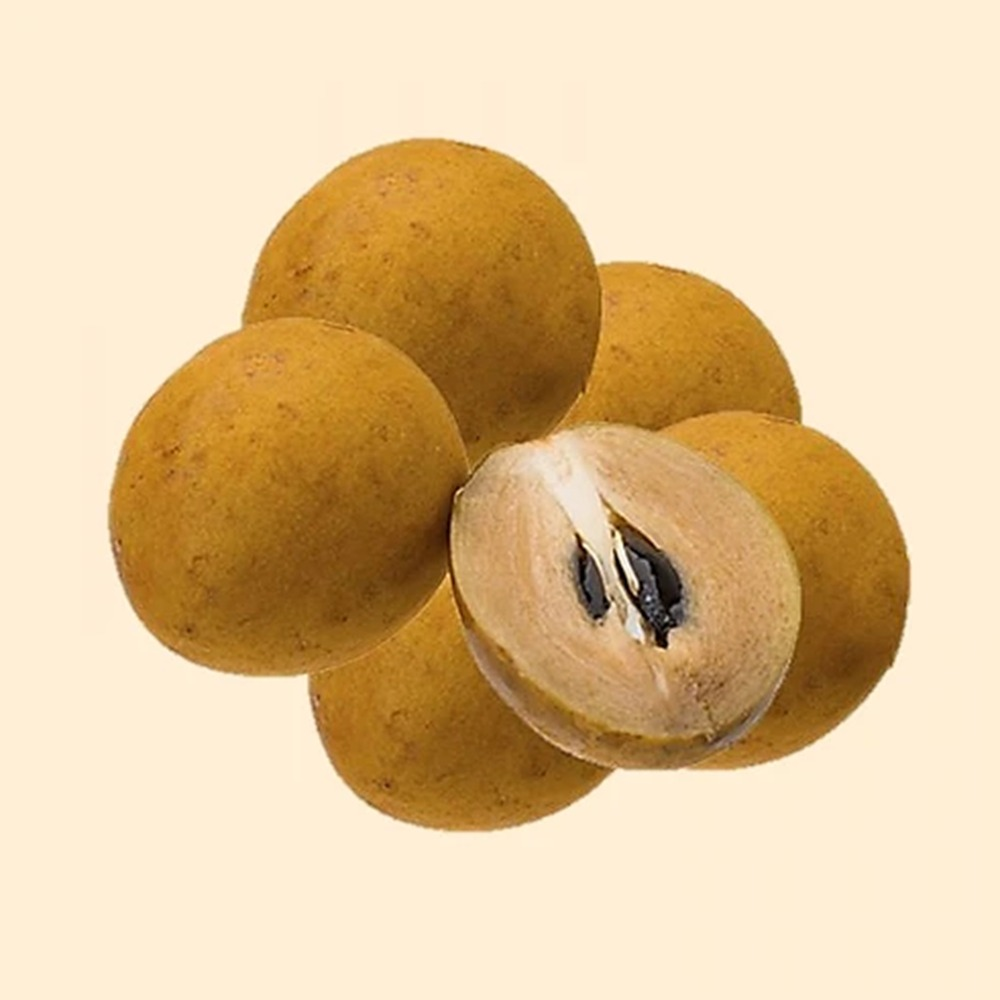

Freshness You Can Trust

Chiku, also known as Sapodilla, is a sweet, soft, and highly nutritious tropical fruit. It is rich in dietary fiber, natural sugars, vitamins A and C, potassium, iron, and antioxidants. Chiku helps improve digestion, provides instant energy, strengthens the immune system, supports healthy bones, and promotes healthy skin. Its naturally sweet taste makes it a delicious and healthy fruit that can be eaten fresh or used in milkshakes, smoothies, desserts, and fruit salads.